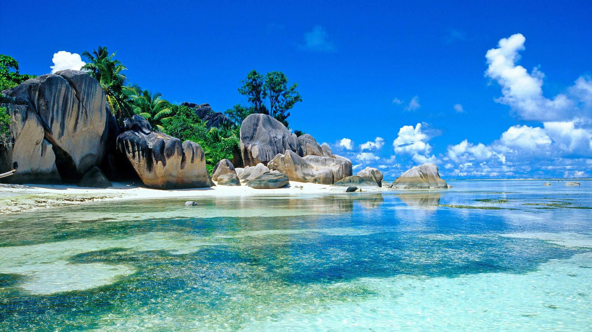

Kepulauan Belitung
Di lepas pantai timur Sumatera, diapit oleh Selat Gaspar dan Selat Karimata, berdiri sebuah pulau menawan dihiasi pantai yang indah dan pemandangan memesona, Pulau Belitung namanya. Ada pemandangan unik dihiasi pantai pasir putih bak mutiara, air jernih yang segar, dan kokohnya formasi batu granit di tepi air dangkal. Itu semua hanya sebagian saja dari pemandangan terbaik pulau Laskar Pelangi.
Bersama dengan Pulau Bangka di sebelahnya yang jauh lebih besar dan pulau-pulau kecil lainnya, dahulu semua pulau ini berada di provinsi yang sama yaitu Provinsi Sumatera Selatan. Akan tetapi, kemudian tahun 2000, kepulauan ini secara resmi dibentuk menjadi provinsi baru ke-31 di Indonesia yang disebut Provinsi Kepulauan Bangka Belitung.
Pulau Belitung dibagi menjadi dua kabupaten yaitu Kabupaten Belitung dengan Kota Tanjung Pandan sebagai ibu kotanya dan Kabupaten Belitung Timur dengan ibu kota Manggar. Pemandangan yang paling berbeda di Pantai Belitung adalah formasi batuan granit besar yang menyebar di sepanjang perairan dangkal. Batu granit raksasa tersebut diam membeku di tengah air berdampingan bersama indahnya pemandangan sekitar yang memesona. Beberapa formasi batuan raksasa ini bahkan membentuk terowongan pendek sehingga di bawahnya menjadi taman bermain menarik di perairan yang tenang. Temukan salah satu pemandangan pantai dengan pemandangan batu granit ini di Pantai Tanjung Tinggi yang sekaligus menjadi latar film “Laskar Pelangi“.
Belitung juga dikelilingi lebih dari 100 pulau kecil yang hampir semuanya dihiasi pasir putih dan batu granit tetapi hanya beberapa pulau yang berpenghuni. Salah satu pulaunya yaitu Pulau Lengkuas adalah tempat dimana Anda bisa menemukan rumah kuno antik dan mercusuar abad ke-19 dan yang dibangun oleh pemerintah Hindia Belanda. Pulau Burung, Pulau Babai, Pulau Pengadaran, Pulau Lutung, Pulau Kera, dan Pulau Jenang adalah di antara beberapa pulau-pulau kecil yang menawarkan pemandangan sangat indah.
Sejarah
Wilayah propinsi Kepulauan Bangka Belitung, terutama Pulau Bangka berganti-ganti menjadi daerah taklukan Kerajaan Sriwijaya, dan Majapahit. Setelah kapitulasi dengan Belanda, Kepulauan Bangka Belitung menjadi jajahanInggris sebagai "Duke of Island". 20 Mei 1812 kekuasaan Inggris berakhir setelah konvensi London 13 Agustus 1824, terjadi peralihan kekuasaan daerah jajahan Kepulauan Bangka Belitung antara MH. Court (Inggris) dengan K.Hcyes (Belanda) di Muntok pada10 Desember 1816. Kekuasaan Belanda mendapat perlawanan Depati Barin dan putranya Depati Amir yang di kenal sebagai perang Depati Amir (1849-1851). Kekalahan perang Depati Amir menyebabkan Depati Amir diasingkan ke Desa Air Mata Kupang NTT. Atas dasar stbl. 565, tanggal 2 Desember 1933 pada tanggal 11 Maret 1933 di bentuk Resindetil Bangka Belitung Onderhoregenheden yang dipimpin seorang residen Bangka Belitung dengan 6 Onderafdehify yang di pimpin oleh Ast. Residen. Di Pulau Bangka terdapat 5 Onderafdehify yang akhirnya menjadi 5 Karesidenan sedang di Pulau Belitung terdapat 1 Karesidenan.
Di zaman Jepang, Karesidenan Bangka Belitung di perintah oleh pemerintahan Militer Jepang yang disebut Bangka Beliton Ginseibu. Setelah Proklamasi kemerdekaan Republik Indonesia, oleh Belanda di bentuk Dewan Bangka Sementara pada 10 Desember 1946 (stbl.1946 No.38) yang selanjutnya resmi menjadi Dewan Bangka yang diketuai oleh Musarif Datuk Bandaharo Leo yang dilantik Belanda pada 11 November 1947. Dewan Bangka merupakan Lembaga Pemerintahan Otonomi Tinggi. Pada 23 Januari 1948 (stb1.1948 No.123), Dewan Bangka, Dewan Belitung dan Dewan Riau bergabung dalam Federasi Bangka Belitung dan Riau (FABERI) yang merupakan suatu bagian dalam Negara Republik Indonesia Serikat (RIS). Berdasarkan Keputusan Presiden RIS Nomor 141 Tahun 1950 kembali bersatu dengan Negara Kesatuan Republik Indonesia (NKRI) hingga berlaku undang-undang Nomor 22 Tahun 1948.
Pada tanggal 22 April 1950 oleh Pemerintah diserahkan wilayah Bangka Belitung kepada Gubernur Sumatera Selatan Dr. Mohd. lsa yang disaksikan oleh Perdana Menteri Dr. Hakim dan Dewan Bangka Belitung dibubarkan. Sebagai Residen Bangka Belitung ditunjuk R.Soemardja yang berkedudukan di Pangkalpinang.Berdasarkan UUDS 1950 dan UU Nomor 22 Tahun 1948 dan UU Darurat Nomor 4 tanggal 16 November 1956 Karesidenan Bangka Belitung berada di Sumatera Selatan yaitu Kabupaten Bangka dan dibentuk juga kota kecil Pangkalpinang. Berdasarkan UU Nomor 1 Tahun 1957 Pangkalpinang menjadi Kota Praja.
Pada tanggal 13 Mei 1971 Presiden Soeharto meresmikan Sungai Liat sebagai ibukota Kabupaten Bangka.Berdasarkan UU Nomor 27 Tahun 2000 wilayah Kota Pangkalpinang, Kabupaten Bangka dan Kabupaten Belitung menjadi Propinsi Kepulauan Bangka Belitung. Selanjutnya sejak tanggal 27 Januari 2003 Propinsi Kepualauan Bangka Belitung mengalami pemekaran wilayah dengan menambah 4 Kabupaten baru yaitu Kabupaten Bangka Barat, Bangka Tengah, Belitung Timur dan Bangka Selatan.